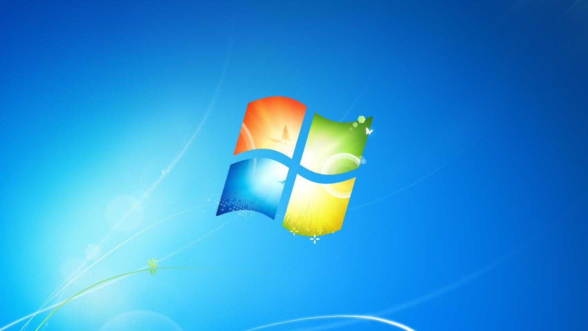

Você está procurando informações sobre o Windows?
Aqui voce vera uma pesquisa e duvidas sobre windows:
Suas Duvida serão respondidas;
As Curiosidades ficaram no site;
A vontade de ter um windows no seu PC aumentarao.
==========================================================================================
Sobre

O Windows é um sistema operacional da Microsoft, lançado em 1985, e se tornou um dos mais utilizados no mundo.
Aqui estão os principais pontos:
Interface Gráfica: Popularizou a GUI, permitindo interação por ícones e janelas.
Evolução: Passou por várias versões, como Windows 95 (Menu Iniciar), Windows XP (estabilidade) e Windows 10 (integração com nuvem).
Multitarefa: Permite executar vários programas ao mesmo tempo, aumentando a produtividade.
Ecosistema: Integra-se com outros produtos da Microsoft, como Office e OneDrive, e é compatível com diversos dispositivos.
==========================================================================================
Informação